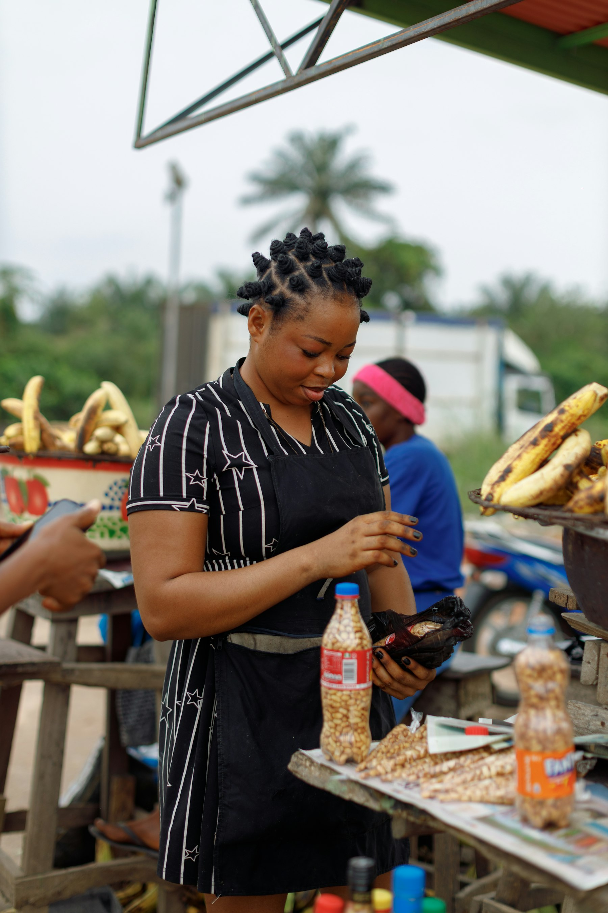

Applying PhD-level rigour to read, write, and consult on urban and environmental changes.
People and Places is a research, writing, and consulting platform created by Emmanuel Awohouedji, PhD. It offers analytical reflections, research translation, and consultancy at the intersection of human geography, urban politics, and environmental change in Africa.
Read Reflections on Substack
Engage with People and Places
Interested in urban consulting, research translation, policy writing, or educational partnerships? Book a call, or send a mail.